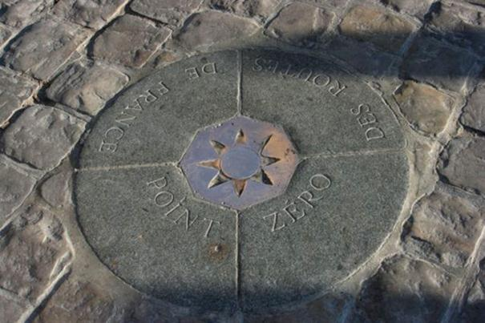
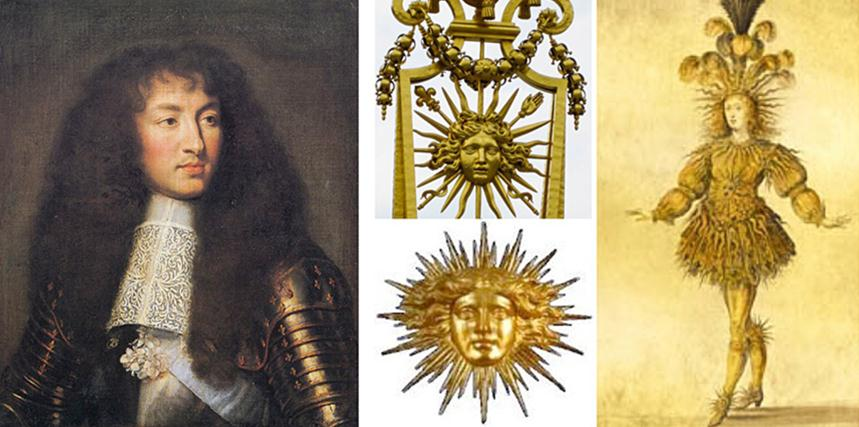
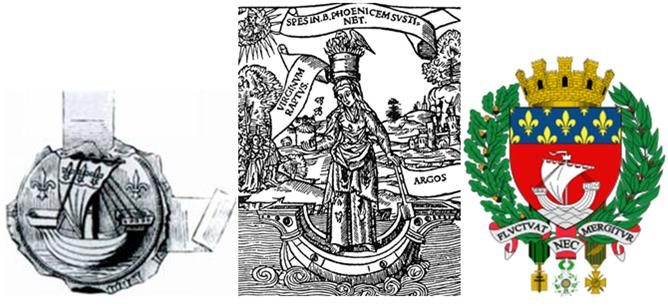
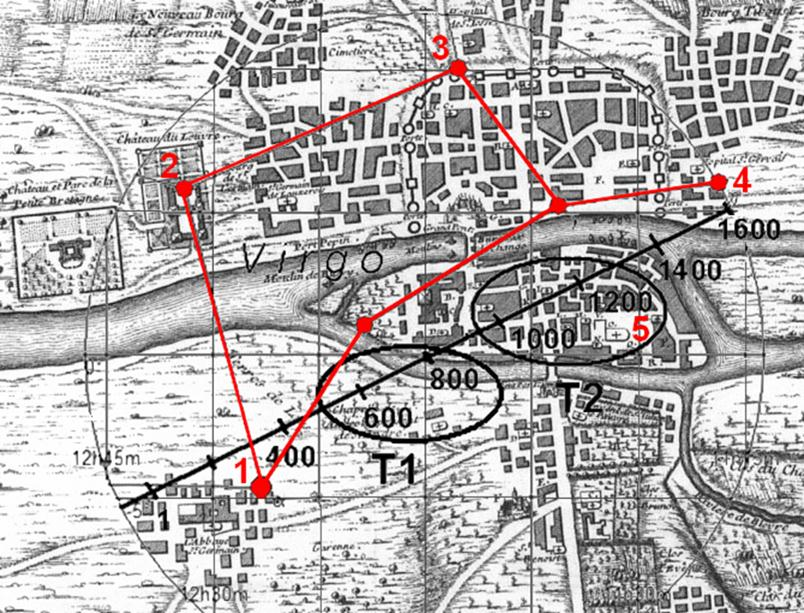
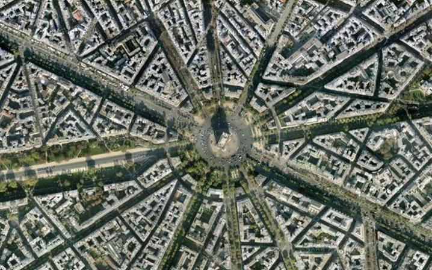
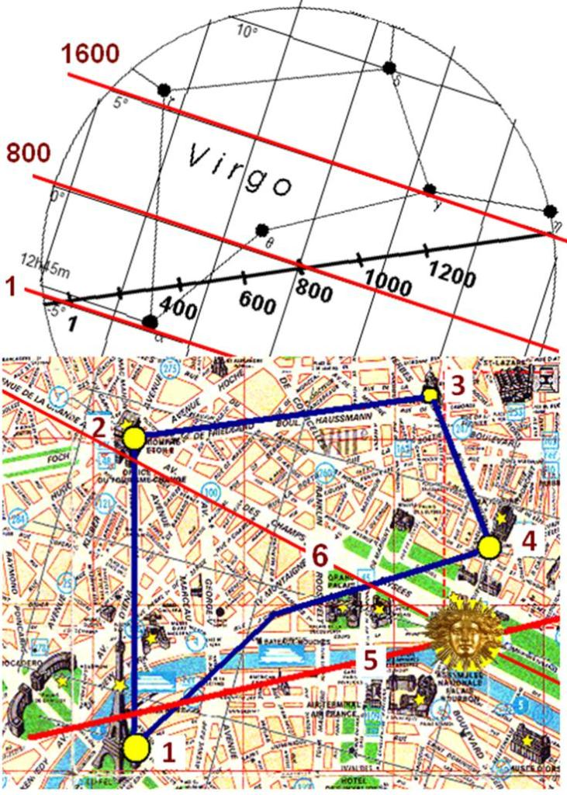
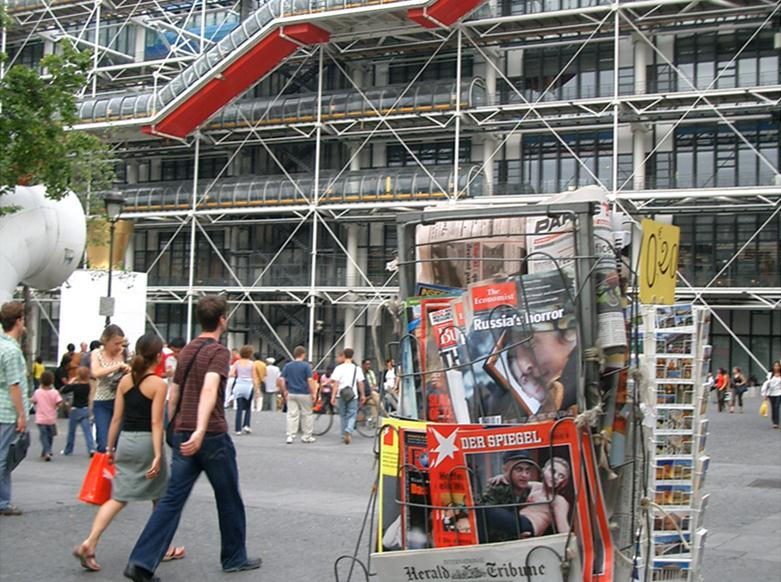

Secrets d'étoiles de la France : Paris et Soleil (partie 3)
par Alexandre ANOPRIENKO
La ville de Paris et le Soleil
Dans la projection presque parfaite « du ciel sur la terre » dans le centre de la France, à première vue, il n'y a pas de place pour Paris - aucune étoile brillante ne lui correspond. Mais après un examen plus approfondi, il devient clair, qu’une seule des étoiles est en mesure de refléter le rôle et la grandeur de Paris – c’est l'étoile qui s’appelle le Soleil !
Il est facile de voir que, d’une telle disposition de la projection terrestre des étoiles, la ligne de l’écliptique, où se déplace le point de l’équinoxe automnal, traverse Paris. Dans les calendriers antiques, le compte du nouvel an correspond exactement à l’équinoxe automnal. Ceci s’accorde bien avec le fait que « Point Zéro » (l'origine de toutes les distances en France) se trouve dans le cœur de Paris, en face de la cathédrale Notre-Dame.
L’association avec le soleil se fait dans le nom de la ville. Selon la légende, au début de notre ère une des colonies mystérieuses des tribus celtes– Les Parisii – habitèrent sur le site du Paris contemporain. Elle se situait sur l'île de la Cité baignée par la Seine. Dans ce lieu béni a grandi la ville de Lutèce, dont le nom que certains pessimistes et détracteurs ont tendance à associer avec les marais et la boue des rives incultes de la Seine de cette époque. Mais les optimistes affirment qu’initialement c’était Loukotokía – la Ville de Lumière ! Certains ont également une tendance à associer Paris avec les descendants de Pâris (en grec ancien Πάρις) aussi connu comme Alexandre qui a provoqué le début de la guerre de Troie dans une poésie épique grecque antique. Autant que certains chercheurs sont enclins à voir aux origines de l'histoire de cette guerre quelque mythe solaire, alors Pâris est une personnification du soleil dans ces interprétations. Et comment ne pas rappeler ici le plus célèbre roi de France, Louis XIV - le Roi Soleil, qui gouverna fructueusement pendant 72 ans !
En France, le soleil était toujours un symbole du pouvoir royal et du roi lui-même bien avant Louis XIV. En particulier, les premières mentions connues des emblèmes solaires remontent au règne d’Henri III. Le grand-père et le père de Louis XIV les utilisèrent aussi. Mais c’est seulement avec Louis XIV que les symboles solaires furent très répandus. A douze ans (1651), le jeune Louis XIV débuta dans ses ballets de cour et apparut pour la première fois devant ses tributaires dans l'image du Soleil levant (1653), puis d'Apollon - du dieu du Soleil (1654). Plus tard (en 1662), déjà adulte, Louis XIV apparut devant le public à cheval, vêtu comme un empereur romain. Le roi tint à sa main le garde-corps avec l'image du soleil - un symbole montrant que l'astre du jour protège le roi et toute la France.
Les études réalisées confirment l'hypothèse que la liaison de Paris avec le Soleil dans le contexte du « modèle étoilé » français se forma bien avant Louis XIV. Si l'on met les repères avec les dates sur l’écliptique, qui indiquent en quelles années et en quels endroits le point de l’équinoxe automnal se trouvait sur l’écliptique, on verra clairement comme depuis la première mention au début de notre ère par Jules César dans les « Commentaires sur la Guerre des Gaules » de Lutèce - « de la ville des Parisii, située sur une des îles de la Seine » - jusqu'à nos jours un des points les plus importants du ciel - l’équinoxe automnal - déplaçait le long de la constellation de la Vierge. Et dans le même temps, « la ville du Soleil » capitale se formait progressivement.
Le soleil et la constellation de la Vierge aux armes de Paris
Les armes de Paris ont été officiellement approuvées en 1358 par le roi Charles V. Ces armes représentent un navire qui symbolise l’île de la Cité sur la Seine au cœur de la ville et qui a la forme d'un navire, au-dessus duquel sont dessinés les lys, qui sont à la fois un symbole du soleil et un symbole de la Vierge. Sur certaines images la Vierge est debout sur un navire au milieu du fleuve.
À cet égard, on peut supposer que les symboles et l'image de la constellation de la Vierge aient été présentés initialement dans la conception du plan de Paris. Probablement, la masse en pierre de l'église de Saint-Germain-des-Prés –l'un des plus vieux bâtiments de Paris - a été liée avec l'étoile principale de la constellation (Spica).
À partir du VIIIe siècle, Saint-Germain-des-Prés est la plus influente abbaye du monde chrétien. S’il y avait une projection réduite de la constellation de la Vierge dans le Paris moyenâgeux, alors le rôle de l’étoile principale Spica devait appartenir à l'abbaye de Saint-Germain-des-Prés (indiquée par le chiffre 1 sur la figure, chiffre 2 - le Louvre).
Le fait, que cette correspondance symbolique probablement, était le cas, est lié avec une ferme volonté de Louis XIV d’incarner l'image de la Vierge à Versailles et à Paris dans la période de sa reconstruction générale.
Le Versailles et la constellation de la Vierge
L'histoire de Versailles débute en 1661, lorsque Louis XIV, après être devenu de facto le roi de France, commence presque immédiatement à faire construire une nouvelle résidence de campagne à 17 kilomètres au sud-ouest de Paris. La zone du parc de Versailles a été conçue par André Le Nôtre (1613-1700) sous la forme d'une composition géante avec une longueur totale d'environ 3 km ce qui a été déterminé par les limites de visibilité des zones du parc les plus éloignées.
Toute la composition du parc est soumise à l'axe principal, qui part du centre du palais. La pente de parterre d’une longueur de 300 mètres, connue comme le « Tapis vert », se trouve sur l'axe principal de la composition. La pente douce au long du « Tapis vert » crée un effet très spécifique : l'observateur situé près du palais a une illusion d’élévation du miroir des eaux disposé plus loin, près de l’immense canal en croix. L'orientation de tout l’ensemble de la composition vers le Nord-Ouest est généralement expliquée par le fait que, pendant le solstice d'été, le soleil couchant, reflétant dans le miroir des eaux du canal, doit créer des effets optiques inhabituels.
Dans l'analyse de la composition de conception du parc de Versailles, tout a d'abord, c’est une asymétrie apparente dans la distribution des éléments nodaux étoilés avec une conception asymétrique qui attire l'attention. Le plus important élément (pour le moment perdu et ne faisant pas partie de la zone du parc) est situé dans la partie supérieure gauche de la composition. Il est généralement similaire à l'élément dans la partie supérieure du plan (une zone circulaire, appelée traditionnellement « l’Étoile du roi »), qui n'a pas gardé l’aspect d'origine à ce jour.
La clé pour comprendre les causes de l'asymétrie apparente de la composition est la disposition du plan de Versailles dans l'orientation correcte (le Nord est en haut) et sa superposition avec l'image de la constellation de la Vierge orientée analogiquement.
En conséquence, il devient évident que Versailles, en fait, est aussi une image particulière de la constellation de la Vierge, qui double à une échelle fortement réduite ce que a été formé depuis l'époque des Templiers pour tout le centre de la France. Il est difficile de surestimer l’importance de Versailles dans l’urbanisation non seulement française, mais aussi mondiale. Il suffit de mentionner le fait que Versailles est devenu non seulement un modèle pour la composition des résidences royales similaires en Europe (par exemple, Sanssouci à Potsdam et Peterhof, près de Saint-Pétersbourg), mais a servi aussi un prototype pour la composition de la partie centrale de la capitale des États-Unis, de la ville de Washington. Mais l'idée la plus complète de Versailles a été réalisée seulement à Paris par Le Nôtre.
La ville de Paris de Louis XIV et la constellation de la Vierge
À Paris, un aménagement d'un vaste territoire, adjacent du Nord-Ouest à l’ensemble du Louvre et des Tuileries, d’où, comme à Versailles, part l’axe principal de la composition, dont l’élément principal est l'avenue des Champs-Elysées, a commencé en 1667. La structure, et les dimensions (y compris la longueur totale de 3 km et la largeur de l'avenue principale, qui est égale à 60 m) de la composition des Champs-Elysées correspondent précisément à ce que nous avons à Versailles.
Une des rares différences est qu’il ne fallait pas créer artificiellement l'illusion d’élévation de toute la composition lors de la surveillance du palais, parce que la forme de terrain assurait l’élévation naturelle dans le côté de la colline de Chaillot, où se trouve un des éléments clés de toute la composition - la fameuse Place de l’Étoile qui correspond à « l’Étoile du roi » dans la composition du parc de Versailles.
Les autres éléments clés de « la Vierge de Paris » de l’époque de Louis XIV sont aussi les lieux tout à fait remarquables repérés par les temples (3 -. l’église de Saint-Augustin, 4 – l’église de Marie-Madeleine), ou bien par le symbole de Paris comme la Tour Eiffel (1) qui correspond à la principale étoile de la constellation. En cela, les Champs-Elysées (6) symbolisent la ligne de l'horizon céleste (à savoir à l'époque de Louis XIV !). Les lignes qui rejoignent les points 1, 2, 3 et 4 correspondent aux avenues.
En cela, la Seine est comme un modèle de l'écliptique sur laquelle se déplacent sous la forme de navires les corps célestes - le soleil, la lune et les planètes.
En comparant tout ce qu’a été décrit avec les compositions de certaines icônes et parties de l'autel des temples, on peut aussi conclure que la zone des Champs-Elysées dans sa partie adjacente à la Place de l’Étoile symbolise la Vierge Marie et dans la partie adjacente au Louvre – l'image du Christ, et le Louvre (comme le château de Versailles) au pied de la composition symbolise les seigneurs de la terre.
Conclusion : sur le passé pour l'avenir
Au début de septembre 2004, mon intervention lors d’une conférence à Paris s'est déroulé face aux nouvelles alarmantes des États-Unis sur l'approche vers la Floride de la tempête « Ivan » (juste un an après c’est « Katrina » qui a éclaté), et de la Russie sur la capture de l'école à Beslan par les terroristes. Donc, c’est pourquoi l'avant dernière image de ma présentation en 2004 a été la photo des couvertures de la presse européenne dans un kiosque parisien, montrant les photos de la tragédie de Beslan, qui a coûté de nombreuses vies d'enfants.
Aujourd'hui, malheureusement, au cours de la guerre résultant du coup d'état de l'armée de Kiev, encore une fois, les enfants meurent, mais désormais au Donbass...
La dernière image de ma présentation de 2004, qui est soudainement devenue très pertinente aujourd'hui à Donetsk et probablement sensibilisera en Europe contemporaine, est une tentative d'expliquer pourquoi la reconstruction des anciens modèles d’étoiles est si importante aujourd'hui : dans le monde de l'incertitude et du terrorisme mondial, pour notre bel avenir et l'avenir de nos enfants il est important de souvenir les grandes idées européennes du passé et de construire un grand avenir ! Édifier c’est beaucoup plus important et plus généreux que faire la guerre !!!
Alexandre ANOPRIENKO,
Recteur de l’Université Nationale Technique de Donetsk
Partager cette page